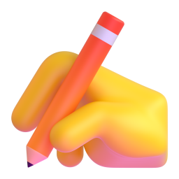

파일을 올리면 제안서 초안을 만들어 드려요
설정은 AI 가 알아서 해요. 정할 일이 생기면 대화로 물어볼게요. 샘플정보(주) (더미) 기준으로 작성해요. 업체 바꾸기
- 제안요청서_최종.hwpx
- 입찰공고문.pdf
- 과업지시서.hwpx
- 샘플정보_일반현황.pptx
설정을 직접 하고 싶다면 직접 설정하며 시작 (어드밴스드)
2027년 ○○정보시스템 운영 및 유지관리 (더미)○○청 · D-17 · 샘플정보(주)
쉬운 모드파일 4개를 읽었어요 (RFP, 공고서, 과업지시서, 일반현황)
RFP 분석: 요구사항 47건, 평가표 11항목(100점), 분량 50페이지
참여 확인: 충족 9, 확인 필요 3, 미충족 0
목차: RFP 지정 목차 그대로 4부 13절
참고할 내 제안서 3개를 절에 맞췄어요
3.3 장애 대응을 쓰고 있어요5 / 13절 · 약 11분 남음
창을 닫아도 계속 써요. 질문이 생기면 여기서 물어볼게요.
질문 1 / 3 · 업체 확인
야간 운영 지원 인력은 상주인가요?RFP SER-004 가 야간 지원을 요구해요. 일반현황에는 정보가 없어요.
고른 답은 3.3 장애 대응에 바로 반영해요. 나중에 바꿀 수 있어요.
답을 기다리는 동안 다른 절을 계속 써요6 / 13절
13절 44페이지를 다 썼어요. 검사를 했어요 (오류 2, 경고 5)
질문 1 / 2 · 검사 오류
복구 시간이 두 곳에서 달라요. 어느 값으로 맞출까요?3.3 장애 대응은 「2시간」, 3.1 유지관리 체계는 「3시간」이에요. RFP 기준은 1등급 2시간이에요.
경고 5건은 AI 가 고쳤어요. 오류는 답을 받아야 고칠 수 있어요.
질문 3개에 답을 반영했어요 (보류 1건)
제안서 초안이 완성됐어요
13절 44페이지 / 한도 50페이지 · 검사 오류 0 · 보류 1곳(야간 인력 수)
3.2 예방 점검을 표로 바꿔줘
3.2 2페이지의 점검 주기 목록을 표(주기, 대상, 방법)로 바꿨어요. 오른쪽에서 확인해 주세요.
쉬운 말로분량 줄이기표로 바꾸기도식 넣기
미리보기
상세 편집으로 열기